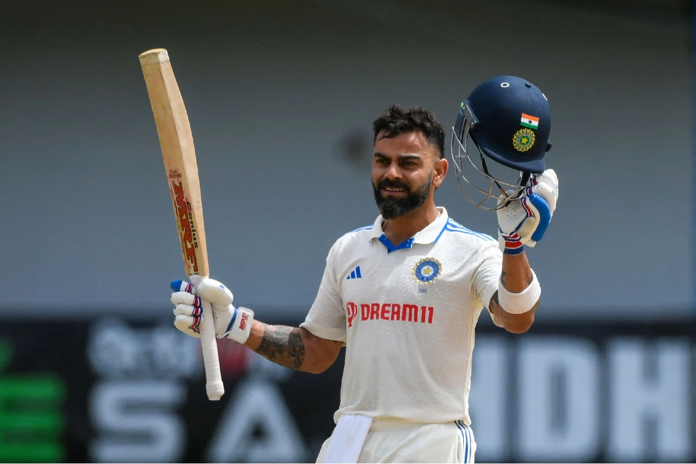

Run Machine
Kohli is renowned for his prolific run-scoring ability across all formats of the game.
He consistently ranks among the top batsmen in international cricket.
Centuries Across Formats
Kohli has scored centuries in Test matches (29), One Day Internationals (80), and Twenty20 Internationals (1), showcasing his versatility and adaptability.
|
|

|

|

|
ICC Awards
He has been honored with several prestigious awards by the International Cricket Council (ICC), including the Sir Garfield Sobers Trophy for ICC Cricketer of the Year.
Captaincy Achievements
Kohli has captained the Indian cricket team in all three formats.
Under his leadership, India achieved historic Test series victories in Australia in 2018-2019 and against England at home in 2020-2021.
Fastest to 8,000, 9,000, and 10,000 ODI Runs:
Kohli holds the record for being the fastest to reach 8,000, 9,000, and 10,000 runs in One Day Internationals.
Chase Master
He is known for his exceptional ability to chase down targets in ODIs and T20Is, earning him the reputation of a master chaser.
Arjuna Award and Padma Shri:
Kohli has received the Arjuna Award (2013) and the Padma Shri, India's fourth-highest civilian award (2017), in recognition of his contributions to cricket.
Second Most international Centuries and Most ODI Centuries
Virat Kohli had samshed 80 centuries in International cricket , Second Most international centuries
Virat kohli scored 50 ODI centuries in international cricket most by any player.